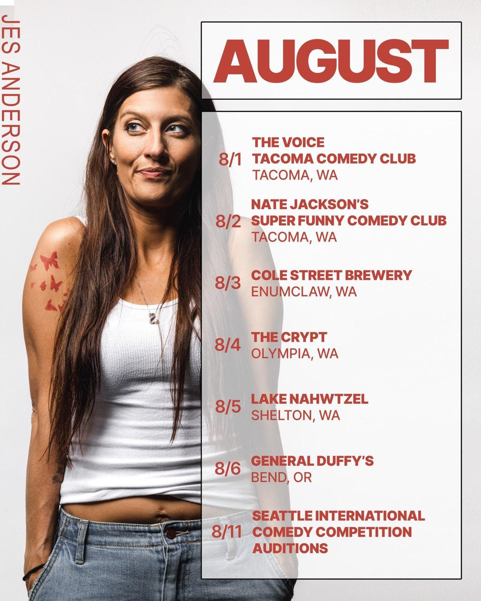
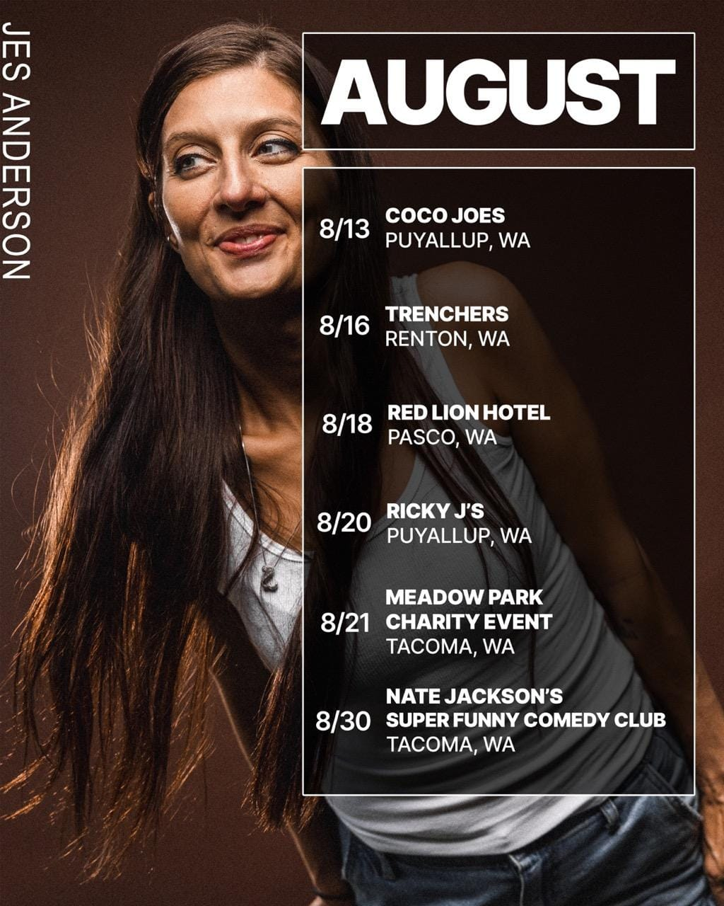

JES ANDERSON
Stand-Up Comedian

Jes Anderson is an up-and-coming comic dedicated to sharing her crazy life with the world. Raised in the heart of Appalachia and currently living in Dupont, Washington, she squeezes stories and curious observations out from the rocks of her experiences. She has two, soon to be teenage children, who she is co-parenting with her one, soon to be ex-husband. By day, Jes manages a Montessori preschool, by night she can be found chasing her dreams one stage at a time. Jes is as twitchy as she is funny.
Jes was selected to be included in the 16th Annual NW Women's Comedy Festival. With a profound disregard for rejection and a unique brand of confidence she loves to sway, perform and entertain groups of all sizes and can also lend a special flair to MC your next event.
Contact
Email: jesthecomic@gmail.com
Instagram: @coachsmoach
Facebook: facebook.com/coachsmoach
Calendar
 
Clips
Headshots